Phase 1.1 Social Cards
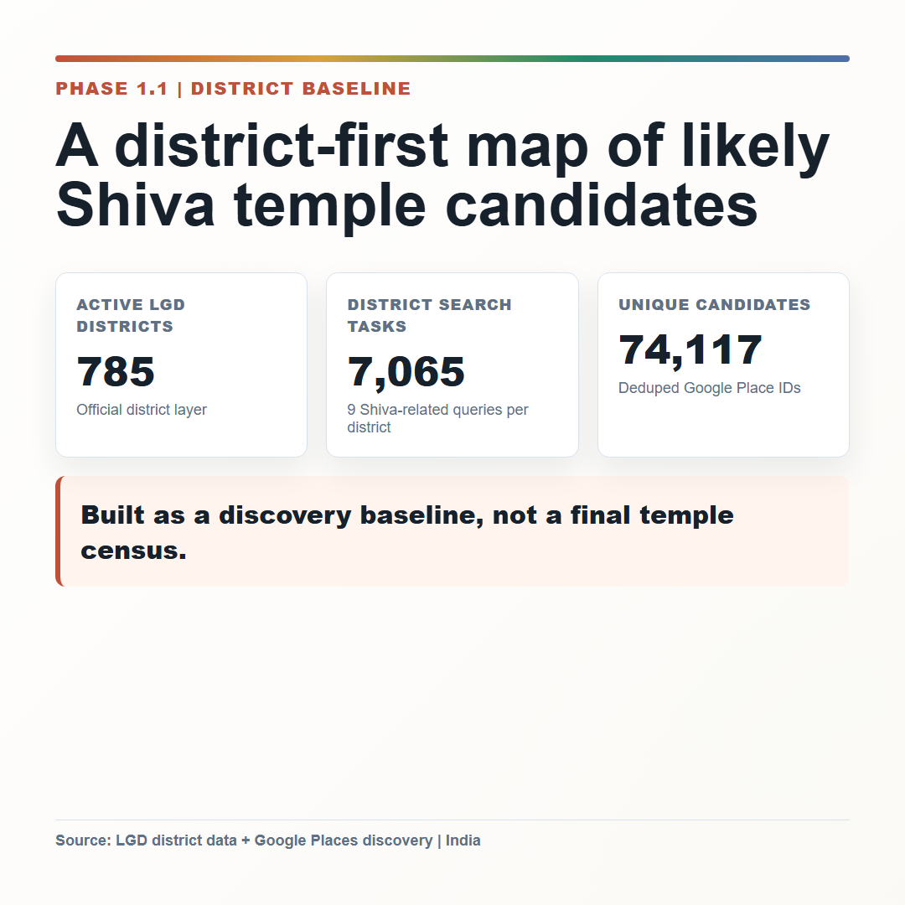
square_01_baseline_snapshot.png
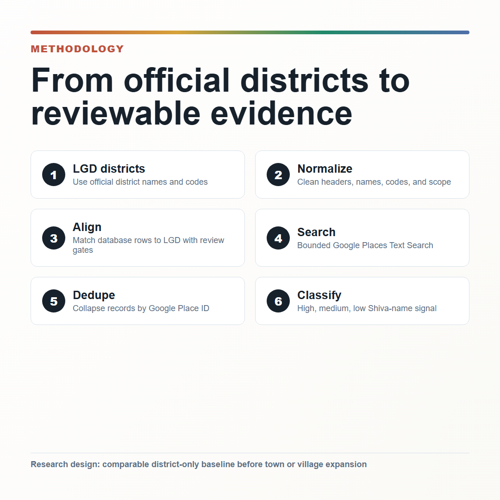
square_02_methodology_pipeline.png
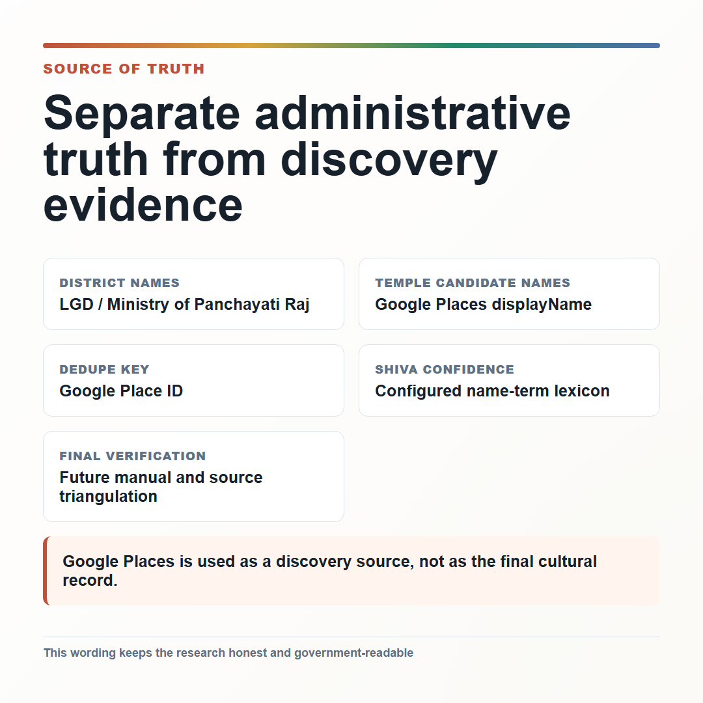
square_03_source_of_truth.png
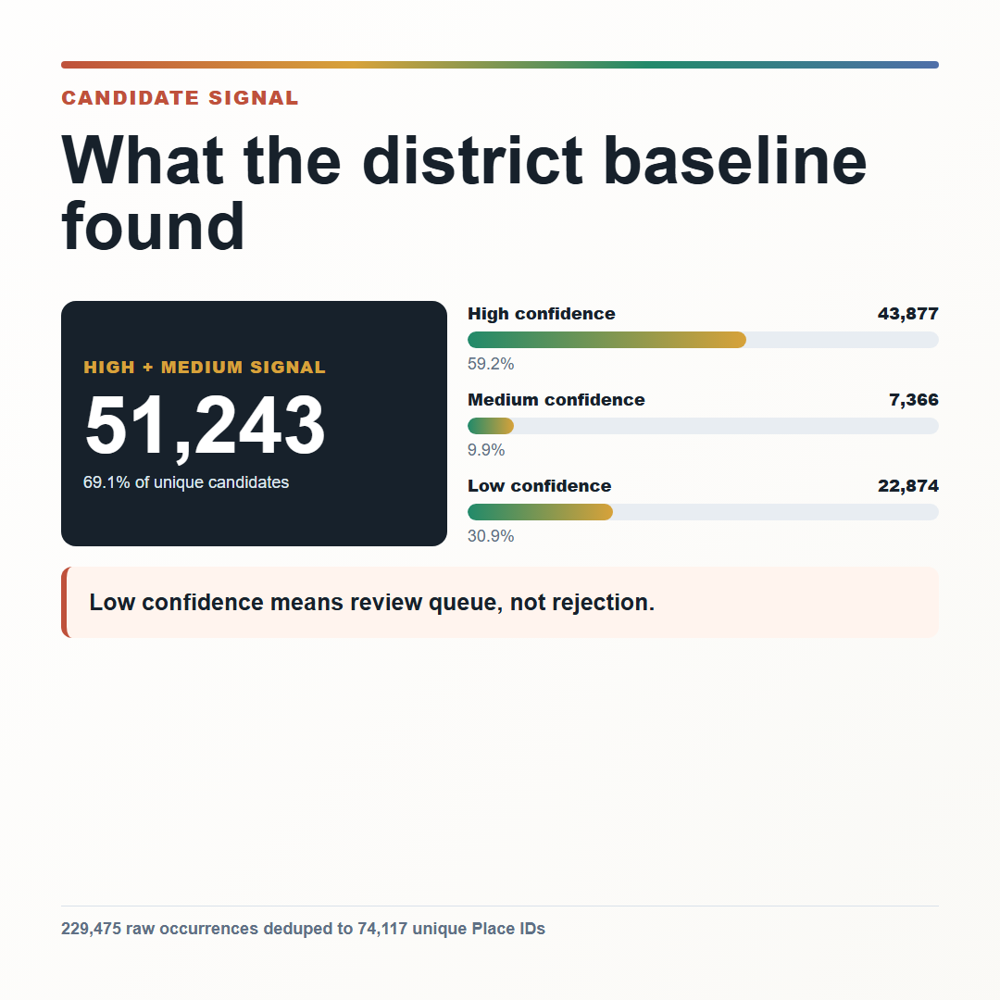
square_04_confidence_signal.png
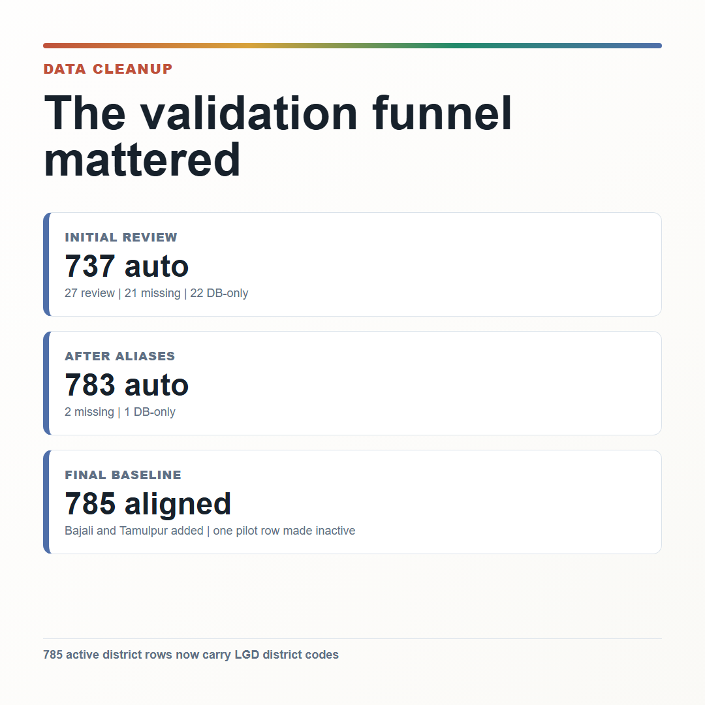
square_05_cleanup_validation.png
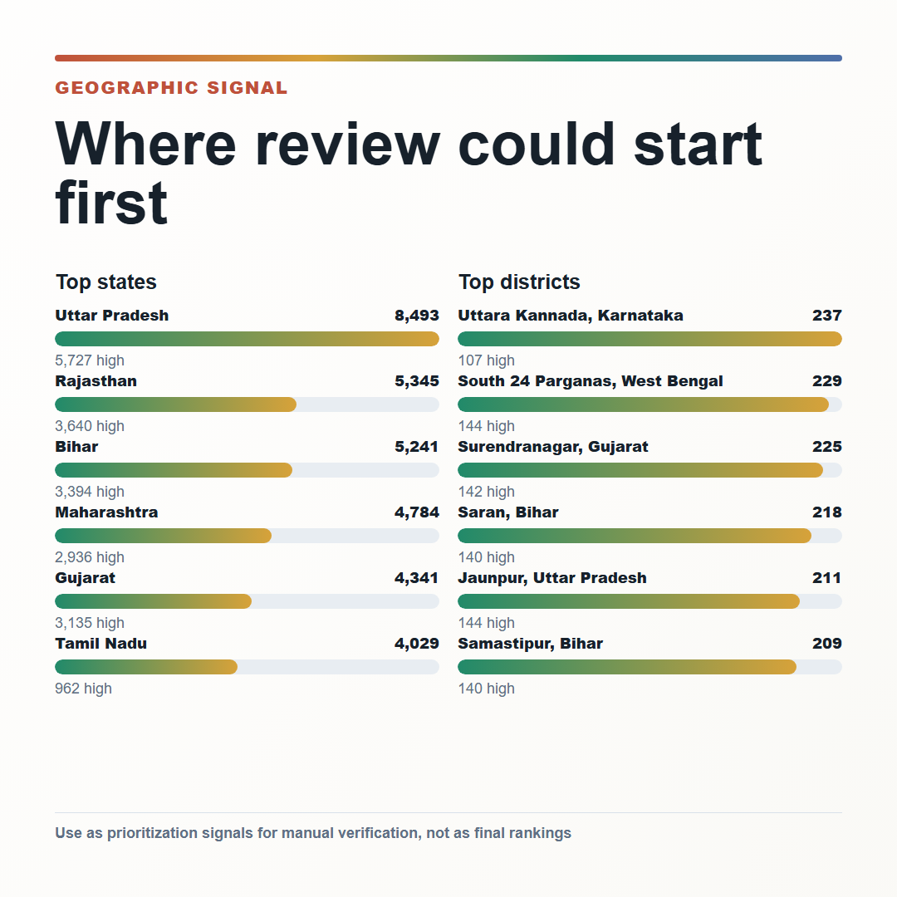
square_06_geographic_signal.png
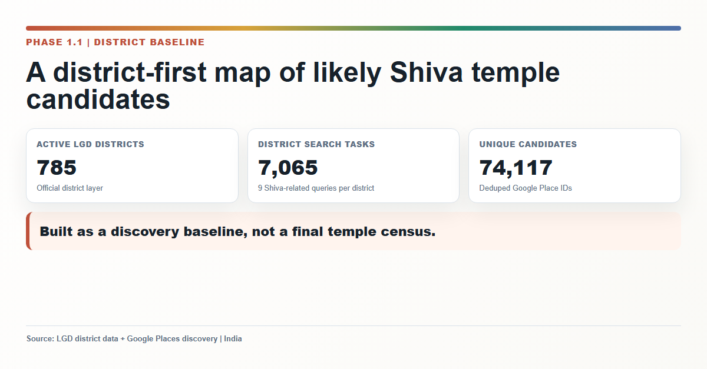
linkedin_01_baseline_snapshot.png
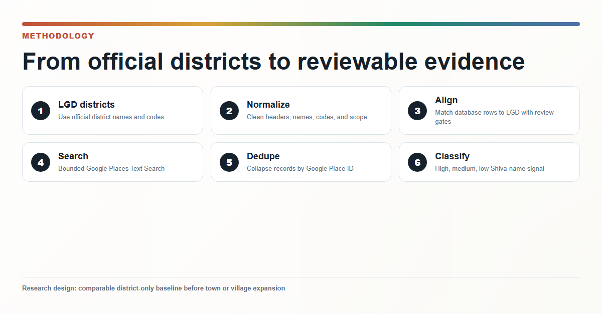
linkedin_02_methodology_pipeline.png
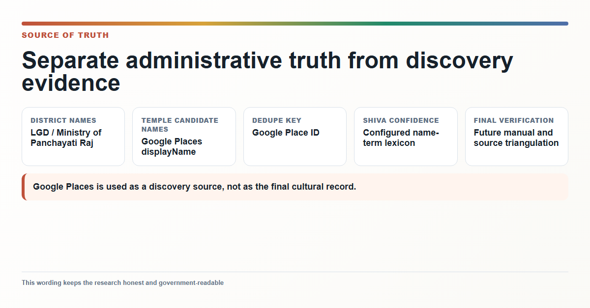
linkedin_03_source_of_truth.png
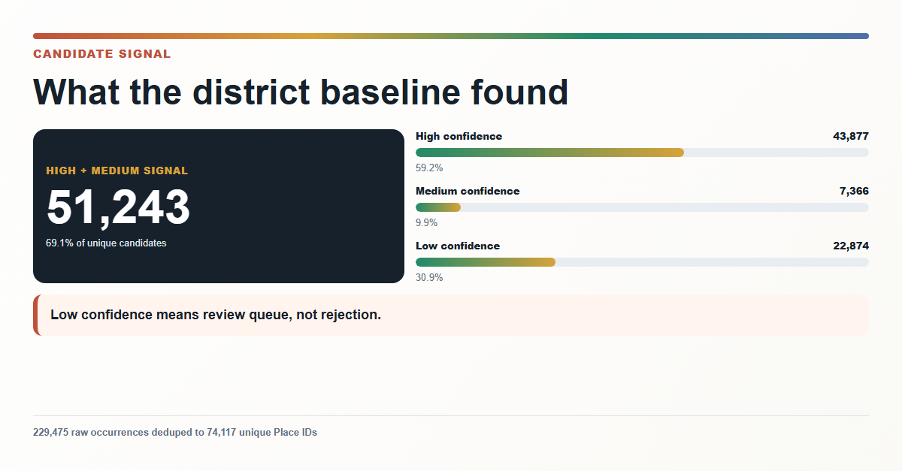
linkedin_04_confidence_signal.png
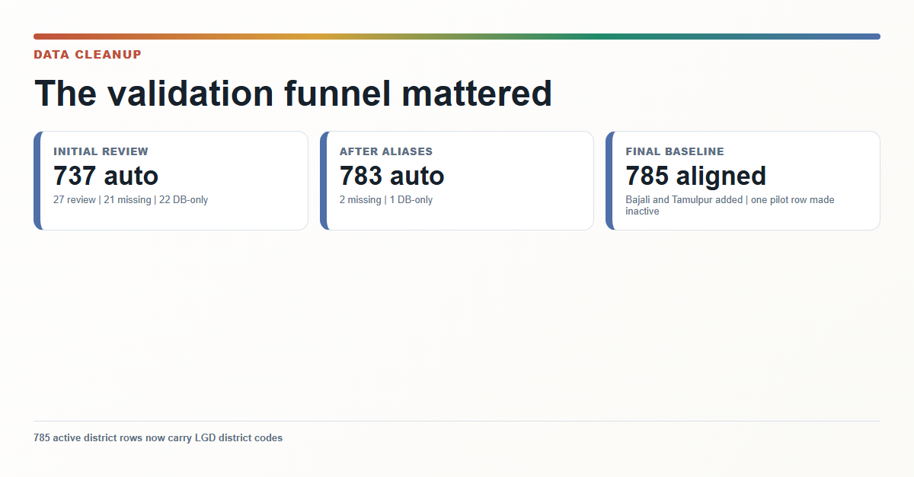
linkedin_05_cleanup_validation.png
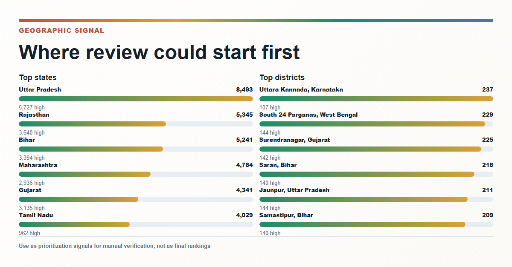
linkedin_06_geographic_signal.png